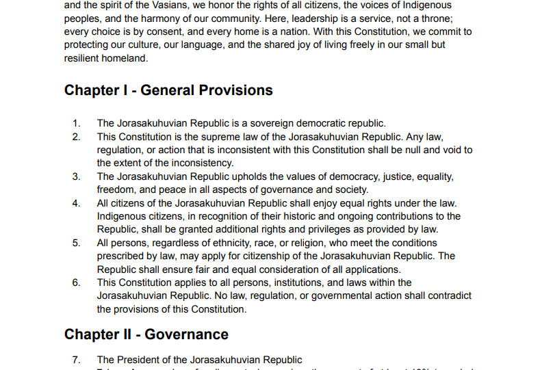
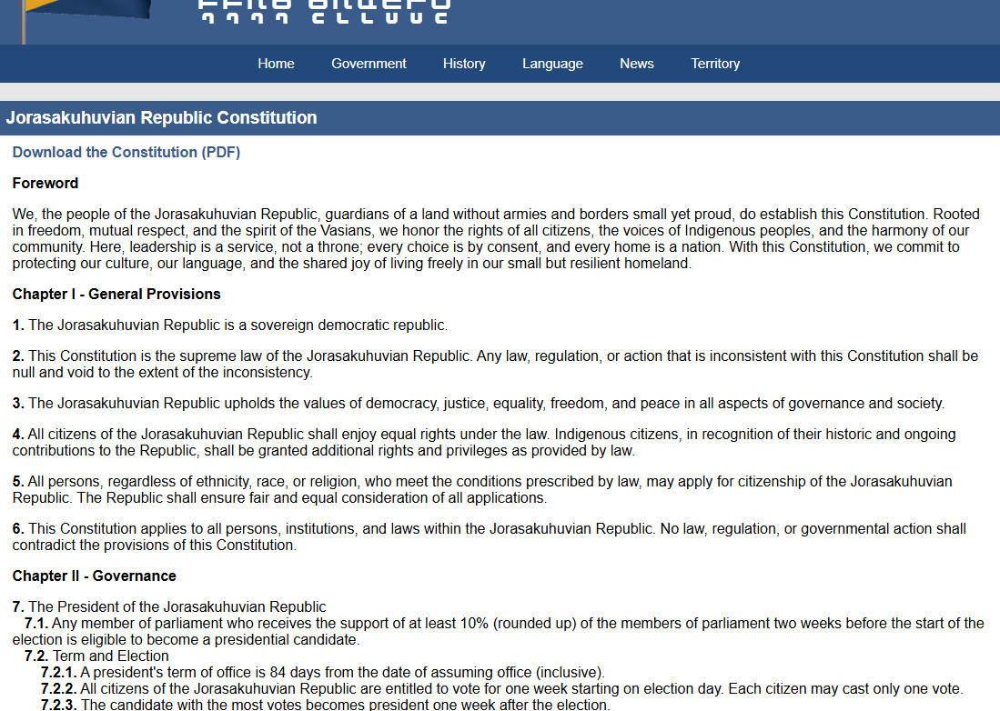

The Jorasakuhuvian Republic Constitution Is Officially Adopted with Its 1st Amendment
The Government of the Jorasakuhuvian Republic proudly announces that the Constitution of the Jorasakuhuvian Republic has been officially adopted. Along with its adoption, the Constitution has entered into force together with its First Amendment, marking a historic milestone in the political and institutional development of the Republic.
The Constitution establishes the fundamental legal framework of the Jorasakuhuvian Republic and defines the principles upon which the nation is governed. As the highest legal authority of the Republic, it guides the organization of government institutions, the rights of citizens, and the responsibilities of public officials.
The document contains several major sections that collectively define the structure and values of the state. These include national general principles, the operation of the government, the roles of Parliament and the President, as well as the rights of citizens. In addition, the Constitution includes provisions that recognize and protect the rights of native citizens.
The section on national principles outlines the identity and core values of the Jorasakuhuvian Republic. It defines the nature of the state, the guiding principles of governance, and the basic framework of citizenship and national unity.
Another important section explains how the government operates. It sets out the administrative structure of the Republic and clarifies how different institutions cooperate to ensure stability, transparency, and effective governance.
The Constitution also formally defines the responsibilities and authority of Parliament and the President. Parliament plays a central role in representation and legislation, while the President serves as the head of state and government, responsible for leading the executive branch in accordance with the Constitution.
A key component of the Constitution focuses on the rights of citizens. These provisions guarantee fundamental protections and affirm the Republic’s commitment to equality, justice, and civic participation.
Recognizing the historical importance of native citizens, the Constitution includes a dedicated section addressing their rights. These provisions acknowledge their contributions to the foundation of the Republic and ensure their recognition within the national framework.
The adoption of the Constitution together with its First Amendment demonstrates the Republic’s commitment to establishing a structured, transparent, and evolving system of governance.
With the Constitution now officially in force, the Jorasakuhuvian Republic enters a new stage of institutional development. The government encourages citizens and observers to read and understand the Constitution, as it forms the foundation of the Republic’s governance and future direction.
Go to the Constitution Webpage Download the Constitution (PDF)
▲ The beginning part of the Constitution.

▲ Details page on the website.